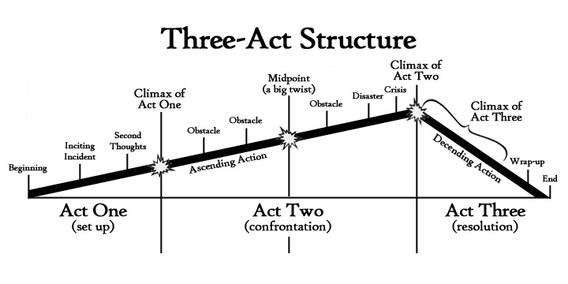

The world has become slightly captivated by startups. The very essence of a startup is an intent to disrupt some aspect of life, but what intrigues us extends beyond what the companies do. It’s the culture and the people; their lifestyle and their desire to change our lives.
It’s more than just our curiosity about offices with ping pong tables, prevalent beer culture, and a hoodie dress-code. We idolize this group of people for so many of the right reasons. Startup founders and employees have spunk; they’re scrappy — they’re working to take down Goliaths. They’re creative visionaries; genuine enough to call bullshit when they disagree, but intelligent enough to back up their opinions. We aspire to their success and admire their ability to recover from failure.
Ultimately, What We’re Drawn To Are The Stories And Their Characters. You See — All Startups Are Great Stories
The quest for the startup holy grail is a three act journey through hiring, firing, pivoting and piloting. Act One is the indefinite amount of time building up to the founding of the company. For Steve Jobs and Apple, Act One was years in the making — beginning with Steve tinkering with electronics in his garage as a child.
In Outliers, Malcolm Gladwell argues that success is heavily influenced simply by being in the right place at the right time. So much of the character development that shapes individuals into entrepreneurs is caused by exposure to the right resources and people, inspiration and adversity. We are very much a product of our environment and certain environments breed people to build products.
By the end of Act One, whether a weekend or years in the making, a founding team has gathered around an abstract idea. When the team closes a seed round of financing, Act Two begins and the curtains are drawn back to reveal the story antagonist: time.
Like all good antagonists, time hurls the founding team through challenge after challenge, forcing them to adapt and grow. As time elapses, cash is depleted, the competitive landscape grows more intimidating, and tension builds within the company. This battle against time forces the team to cut corners, take risks, and challenge conventions. Early versions of the product are not so much crafted, but rather patched together, resembling the eccentric, yet endearing nature of Frankenstein.
The pursuit of product/market fit drives the team to test every aspect of their business model, keeping what works and stripping out the rest. The entire marketing strategy may not have wings or worse yet — people may just not want the product. In The Flinch, Julien Smith describes how our natural defense mechanism aims to protect us in times of uncertainty.
“The flinch is the moment when every doubt you’ve ever had comes back and hits you, hard. It’s when your whole body feels tense. It’s an instinct that tells you to run. It’s a moment of tension that happens in the body and the brain, and it stops everything cold.”
Act Two is a constant game of minor tweaks and major pivots. Fires break out left and right. The team is perpetually understaffed. Some entrepreneurs flinch; they cower in the face of these challenges and let the current sweep them off their feet. The stronger ones keep the fight going, despite the out-of-cash date coming into sight.
Team roles are dynamic — team members adapt and take on new challenges in sales, marketing, design — anything required to respond to the largest fire. The typical entrepreneur’s resume is horribly underqualified for everything they are to do, but that doesn’t slow them down. Ingorance may be bliss, but it is also empowering. In Why Not, Yale professors Barry Nalebuff and Ian Ayres discuss an optimistic approach to problem solving.
“In fact, nonexperts sometimes have the advantage of not being constrained by the accepted wisdom. It’s easier to think outside of the box when you don’t even know where or what that box is. Not knowing “that’s just the way it is” or “that was tried once but failed” may help the nonexpert conjure new ideas that the expert would not have discovered.”
Act Three is ultimately defined by the team’s ability to overcome the conflicts in Act Two. If triumphant, the team is rewarded with strong growth, happy customers, and a trajectory on target for an IPO or acquisition. If the team falls under the weight of steady conflict, Act Three can only end in a dramatic downward spiral.
This adventurous professional lifestyle may not be for everyone. It can be stressful, challenging, and uncomfortable. Founding a startup is an extreme measure of guts, but it is inspired by just a few basic desires. Entrepreneurs have created a life where they can work when and where they want. They can always make time for themselves and for those they care about. They are surrounded by interesting people who challenge the way they think. They resist conformity and constantly experiment with new ideas. They know that the work they do is important and they can see the direct impact that they have in people’s lives. It is a full-bodied life.
The secret, though, is that you don’t have to start a company to live such a life. We may think that we aspire to entrepreneurs’ brilliance, wealth, and success but really we look to their freedom and individuality. Those are readily available. You just have to take it.